Yoon (일본어)
尹前大統領が被告人となっている裁判の詳細については以前紹介した下記のような方式を応用することによって皆様がご自身で調べてみることも可能です。ここでお伝えしたいのは特に尹前大統領以外も被告人もなっている事件において(これは被告人名に「윤석열 외 5」等ある事件を述べていす。ここで「외」は「外」ですので尹前大統領以外の5名を含む6名が被告人であるということを意味します)尹前大統領が必ず公判に出席するとは限らないということです。
https://anissatta.github.io/home-project/yoon2/index.html
恐らく先日紹介したソウル中央地方法院のYouTubeチャンネルに昨日投稿された、4月17日の公判の映像( https://youtu.be/6_CY_MTrwGA )に尹前大統領が出てこないので何らかの噂が流れたのだと思います。
この事件の事件番号は2025고합1602ですので、上のページにある方式を事件番号をこれに置き換えて実施してみて下さい。 すると4月17日の公判期日には尹姓の被告人が出席していないことが分かるかと思います。
VirtualBoxを使って皆様のパソコン上に仮想のLinux環境を作成し、例のプログラム(Danny)を動かしてみる方法(完全版)
https://anissatta.github.io/d/
Kim Keon Hee (일본어)
今日の手紙にもある通り台所に置いてあった「水曜日のネコ」というビールの空缶が噂の原因となっていた可能性もあるので除去しました。私がこのビールを買ったのは尹前大統領が非常戒厳を宣布する前のことですし、今週は水曜日に金建希の公判が開かれませんからそのような噂はとてもおかしいのですが。それと今日地球の日には韓国で란12•3(Ran12.3)という映画が公開されるそうです。韓国を旅行中の方はご覧になってみて下さい。
https://cgv.co.kr/cnm/cgvChart/movieChart/30001080
https://www.newsis.com/view/NISX20260421_0003600506
https://seoul.scourt.go.kr/dcboard/new/DcNewsViewAction.work?seqnum=20042&gubun=41
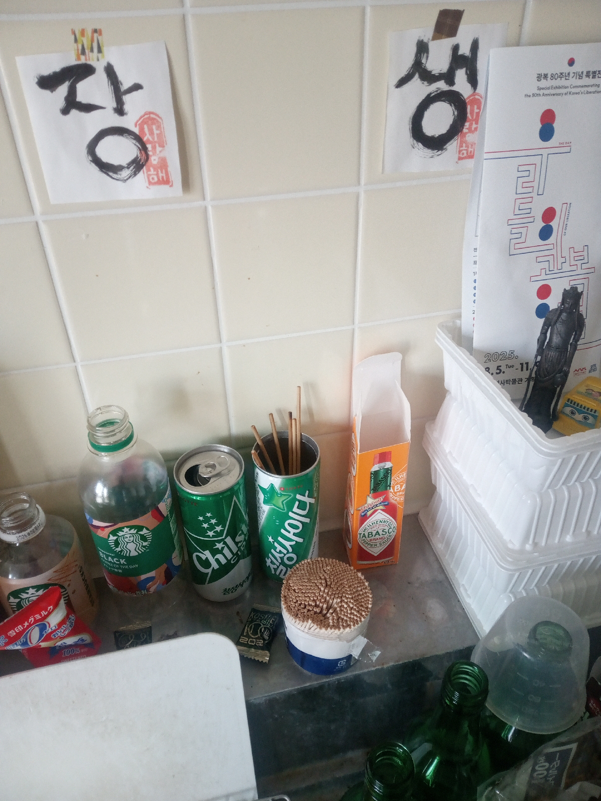
Debian (일본어)
私のPCだとLive USBをVirtualBoxで動かすのは不可能だったのですが、これは恐らくLive USBのramfsとかいうメモリをハードディスクの代わりに使う仕組みによるものだと思われます。(メモリが足りなかったのでしょう)
下記の通常のインストールメディアで仮想ハードディスクにDebianをインストールしたところスイスイ動いています。(私は無人インストールでなく有人インストールにしました) https://cdimage.debian.org/debian-cd/current/amd64/iso-cd/ 內 'debian-13.4.0-amd64-netinst.iso' 選擇
https://cdimage.debian.org/debian-cd/current/amd64/iso-cd/debian-13.4.0-amd64-netinst.iso
ただ追加でsudoersというファイルに写真にあるような変更を管理者(root)として追加したりcurlをインストールする必要がありました。 このことも含め明日新たなマニュアルを作ってみますが、この説明だけで分かるというオタクのような方は早速試してみて下さい。sudoersをいじらなくともsuコマンドで管理者になってからinst.sh内にあるaptコマンドを実行するという方法もあるかと思いますが。
Add user named 'user'
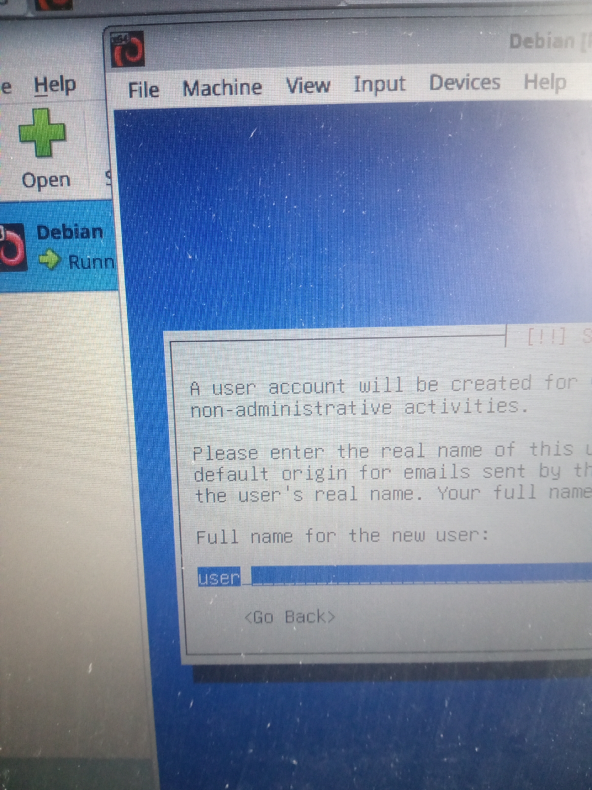
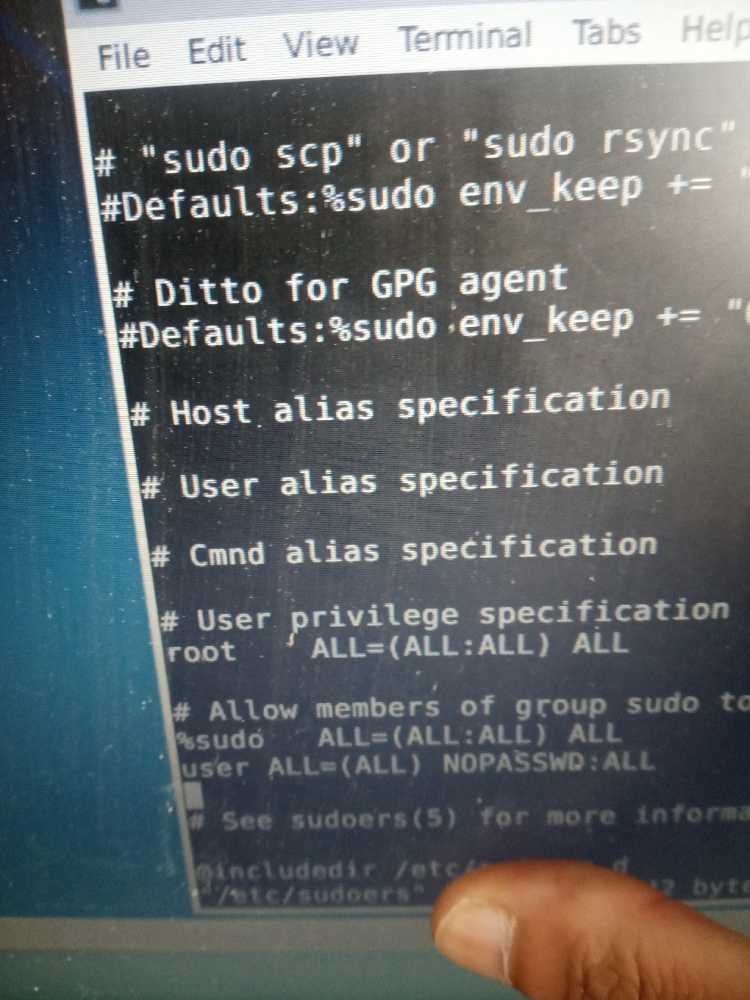
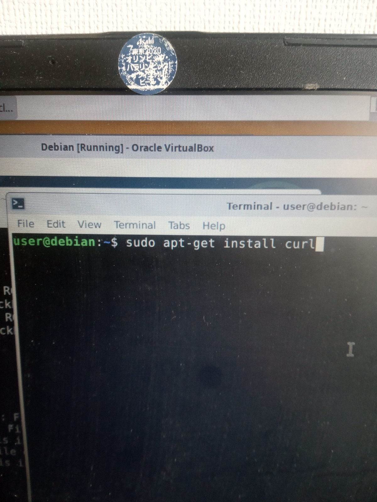
Python (일본어)
PPS: 恐らくいま掲載したPythonのコードはパソコンにあまり詳しくない方でも動かしてみることが出来ると思うのですが、Dannyがこのようにして私のブログから引っ張ってきた文をどのようにして皆様がご覧になるような形にしているのかについて簡単に説明します。
私のブログから引っ張ってきた文は下記のImageMagickというShellコマンドにより画像に焼き付けられています。
https://image-magick.com/2014/09/25/annotate/
その他にも複雑な描画処理がありますが、その一部はHTMLを動的に生成しそれを画像化することによって行っています。これはあまり一般的ではない方法だと思います。最後にこうして作成された画像はFTPによりウェブサーバーへとアップロードされます。これら一連の処理は自動化されており、プログラム自体が停止されるまでは(理論的には)永久に継続されます。
先に掲載したコードのfeed_urlの部分を書き換えて実行してみて頂きたいのですが、これによってニュースを取得すること自体は大して難しくないということがご理解頂けるかと思います。
feed_url = "https://www.yna.co.kr/rss/news.xml"
翻訳には下記のtransというShellコマンドを(Dannyが)使用しています。
https://qiita.com/eggplants/items/f3de713add0bb4f0548f
PS: 下記ページの末尾にあるように私はDannyをPython以外の言語も使って作成しています。Pythonのみで書いていればわざわざLinux環境を準備せずとも皆様の環境で実行してみることが出来たかも知れませんが、当初はそういったことを想定していませんでした。
https://github.com/anissatta/danny
お子様が学校でプログラミングを勉強されていたり、プログラミング教室に通われている場合Pythonがその教材として使用されている可能性もあるかと思います。Pythonというプログラミング言語はLinuxだけでなくWindows等でも動く教育や研究用としても広く使われているものです。今朝私が提示した下記のコードはfeedparaerという、Pythonのパーツさえ準備すればすぐに動かしてみる事が出来ますからお子様がおられる方は一緒に試してみて下さい。先日私が元同僚のM木さんを見かけた際にM木さんは私に気付いたようでしたし、当初は驚かれていたようでしたが恐らくその後で誰かがものすごく面白い噂を流したのではないかと思います。それは皆様が下記のコードを実験してみれば否定されるものかも知れませんね。
#!/usr/bin/python3
import feedparser # 이제 feedparser라는 module를 사용하겠다는 말
import time # 이제 time라는 module를 사용하겠다는 말
try:
while True: # 무한히 다음을 실행항라는 말
# 우선 feed_url라는 變數에 저의 blog의 RSS피드 주소를 넣습니다
feed_url = "https://mycatiskorean.blogspot.com//feeds/posts/default"
# feedparser를 사용해 그 RSS피드를 처리합니다
fp = feedparser.parse(feed_url)
if (len(fp.entries) != 0): # 하나 이상의 기사가 있을 경우에 다음을 실형하라는 말
latest = fp.entries[0] # feedparser가 처리한 일 속의 첫번째 요소(최신 기사)를 latest라는 變數에 넣습니다
print(latest.title) # latest라는 變數에서 기사 제목을 냅니다
print(latest.link) # latest라는 變數에서 기사 URL을 냅니다
else: # 하나도 기사가 없을 경우에 error 냅니다
print("ERROR: cannot fetch data")
time.sleep(3) # 3초 동안 아무 것도 하지 않고 대기합니다
except Exception as e:
print(e) # 예기하지 않은 error 난 경우에 그걸 냅니다
VirtualBox란? (일본어)
恐らく昨日私が説明した方法は実際のパソコンを使ったものなので抵抗感があったのではないかと思います。さっき言及したVirtualBoxというのはWindows等のOSの上に仮想のパソコンを作ってその中でLinux等を動かすというものですから、仮に私が何か悪いものを例のプログラムに仕組んでいたとしても皆様のパソコンに害が及ぶことはありません。仮想マシン起動後の手順は昨日述べた通りですから一度試してみて下さい。VirtualBoxを作っているのはオラクル(Oracle)という会社ですが、恐らく皆様も耳にされたことのある社名だと思います。
https://www.virtualbox.org/wiki/Downloads
※ 皆様がお使いのパソコンの性能にもよりますが、仮想マシンの起動には結構時間がかかります。デスクトップが表示されるまで放置して下さい。うまくいかない方は仮想マシンのメモリを増やしたり、仮想ハードディスクを追加してみて下さい。下記映像に手順が出てくるかと思います。
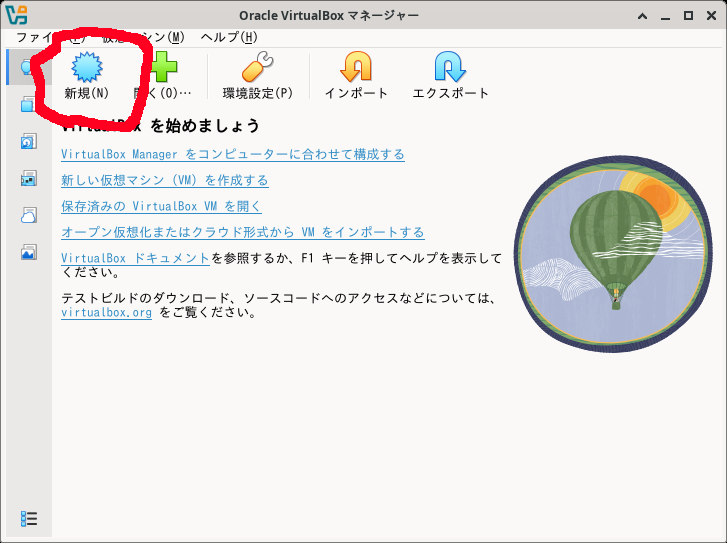
VM名を適当につけ、ダウンロードしたISOファイルを選択し、OSバージョンを64-bitに設定、無人インストールはチェックを外す
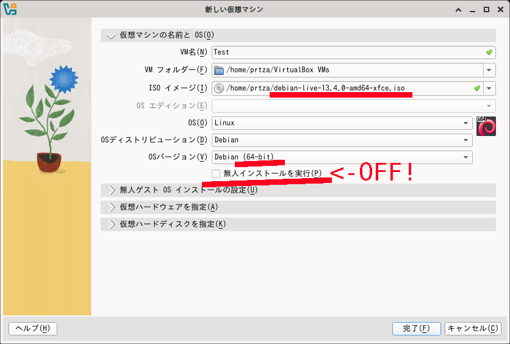
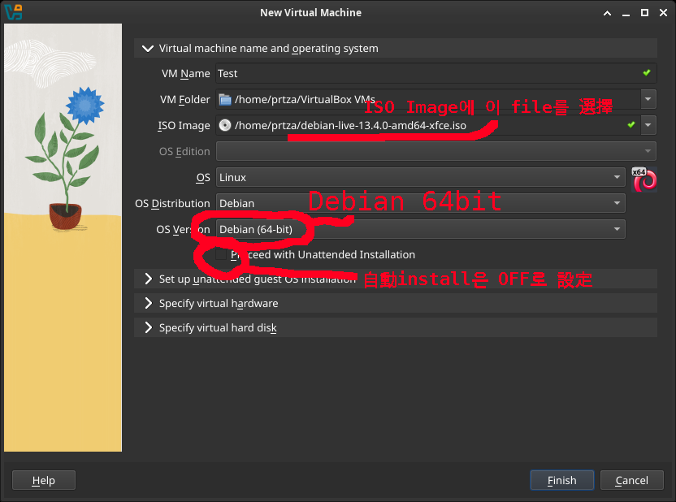
READ THIS!
韓国の尹前大統領が非常戒厳に関連して起訴されている刑事事件は主に下記の4つです。これらの刑事裁判は3審までは継続する可能性があります。
- 내란우두머리 (内乱首謀) ... 1審の判決は무기징역(無期懲役)であり現在2審が進行中です。
- 특수공무집행방해 등 (特殊公務執行妨害等) ... 1審の判決は징역 5년(懲役5年)であり現在2審が進行中です。
- 일반이적 (一般利敵) ... 現在1審が進行中であり、今月結審が予定されています。
- 위증 (偽証) ... 現在1審が進行中であり、結審にて懲役2年が求刑されたかと思います。
今回この地域の方々が私を迫害されているのは恐らく最近上の偽証事件について尹前大統領が懲役2年を求刑されたというニュースが出たことと関係があるかと思います。その場合は該当の記事をもう一度よくお読みになりどういった容疑に関するものだったのか再確認して下さい。今週に予定されている一般利敵事件の結審公判については下記の記事をご参照下さい。
'北 무인기' 의혹 尹·김용현 일반이적 재판 이번 주 결심
https://imnews.imbc.com/news/2026/society/article/6816335_36918.html
Subscribe this channel and watch videos that contain '피고인 윤O열' in their titles:
https://youtube.com/channel/UC7FJIIetpCQX0cxb8eixRyg
오는 22일엔 다음 영화가 개봉되는데 일본 쓰레기들이 이것이 제가 만든 거짓이라고 하고 있을 수도 있게 보입니다.
https://m.megabox.co.kr/movie-detail?rpstMovieNo=26020300
Danny(世間の噂となっている、24時間韓国のニュース記事を表示する例のプログラムです)を皆様のパソコンで実行してみる方法(Windowsユーザー向け)
準備するもの
1. USBメモリー(容量は多い方がよいです)
2. 下記のISOファイル( https://www.debian.org/CD/live/ にリンクがあるのでそれをクリックしダウンロードして下さい。ないし下記リンクを直接入力して下さい)
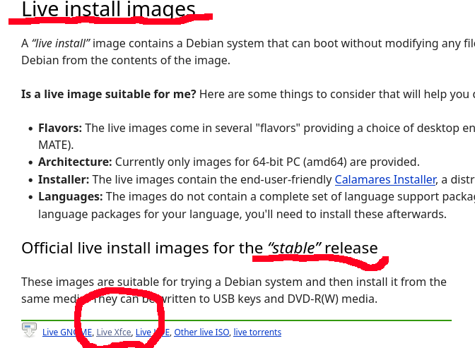
https://cdimage.debian.org/debian-cd/current-live/amd64/iso-hybrid/debian-live-13.4.0-amd64-xfce.iso
起動用USBメモリーの作成方法
Windowsでも動く下記のようなアプリケーションを使って上のISOファイルをUSBメモリーに書き込んで下さい。多分日本語でもこういったことの説明があると思います。パソコンに詳しいお子様がいればその方に聞いて下さい。
- YUMI ( https://pendrivelinux.com/yumi-multiboot-usb-creator/ )
- balenaEtcher ( https://etcher.balena.io/ )
- USBImager ( https://bztsrc.gitlab.io/usbimager/ )
USB起動方法
パソコンの電源を切った状態で上のUSBメモリーを本体に装着し、電源ボタンを押します。そのままで起動する場合もありますが、いつものWindowsが起動してしまう場合はF2キー等を押して起動順位を調整してみて下さい。これに使うキーは機種によって異なるのでパソコンの説明書をご覧になって下さい。(Secure Bootというのが有効になっている場合設定が必要かもですが、日本語で「USB 起動 できない」等検索すれば対応策が出てくるかと思います。
その先の手順は動画にある通りですが、その下にコマンドの一覧を示しています。
“ 대니(Danny)를 시행하시는 법 ”
https://kangdaegae.web.fc2.com/misc/kamsys/temp/danny.mp4
cd /home/user
sudo apt-get install git
git clone https://github.com/anissatta/danny-pojang.git
cd danny-pojang
sh ./init.sh
動画にもあります通りDannyは延々と画像ファイルを作成し続けますので別のターミナルを開き、下記のコマンドで出来上がった画像を定期的に確認なさって下さい。(Qキーで元に戻ります)
cd /home/user/danny-pojang
qiv snap-xl.jpg
https://www.yna.co.kr/view/AKR20260413086751004
https://news.kbs.co.kr/news/view.do?ncd=8534339
http://weekly.chosun.com/news/articleView.html?idxno=50645
私が眼鏡をかけた猫の漫画を初めて公開したのは2024年ごろでした。その頃に金健希は現在のように常に眼鏡をかけていた訳ではありませんでしたが、当時私がビリー・アイリッシュが好きなのではないかという噂が流れた可能性もあるかと思います。私はビリー・アイリッシュが眼鏡を掛け始める前から韓国人のLさんの眼鏡について言及していたと思うのでそのような噂もとてもおかしいのですが。それから皆様は気付かれておられないかも知れませんが、金健希がいる拘置所ではスマートフォン等の使用は禁止されているのです。ですから皆様が私が4月19日に描いた猫の絵が金健希のことだと思われたのでしたらあまりに異常なことなのです。また拘置所ではそういった機器が使えませんから、私が金健希に宛ててメッセージを発信しようとしている等の噂が流れているならなおおかしな事です。下記のような記事を読んでみて下さい。
https://www.bbc.com/news/articles/cz71rp7yn05o
https://www.donga.com/news/Politics/article/all/20251112/132753045/2
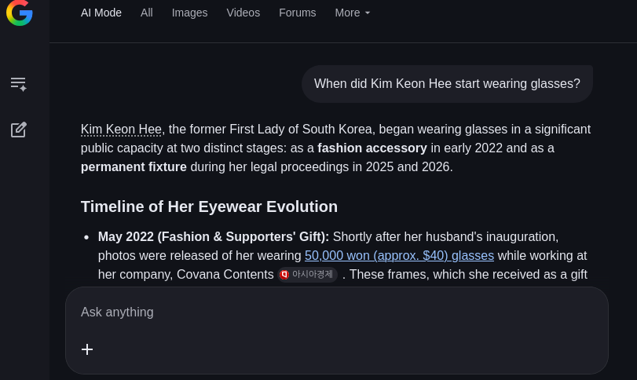
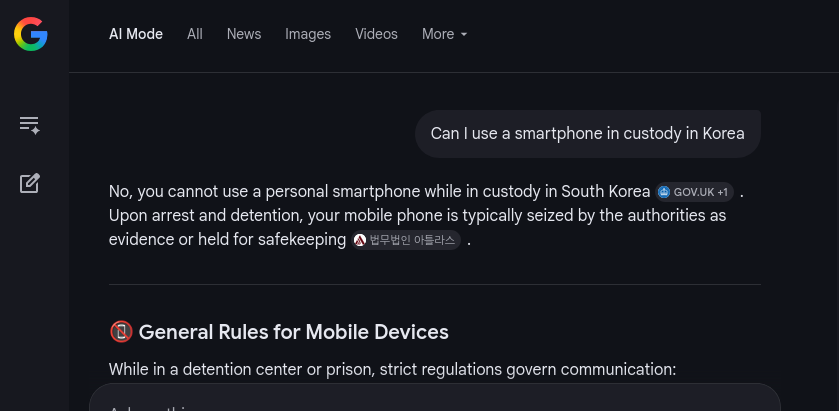
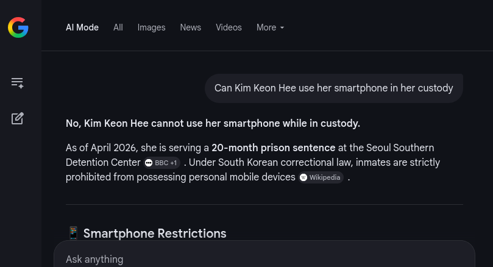
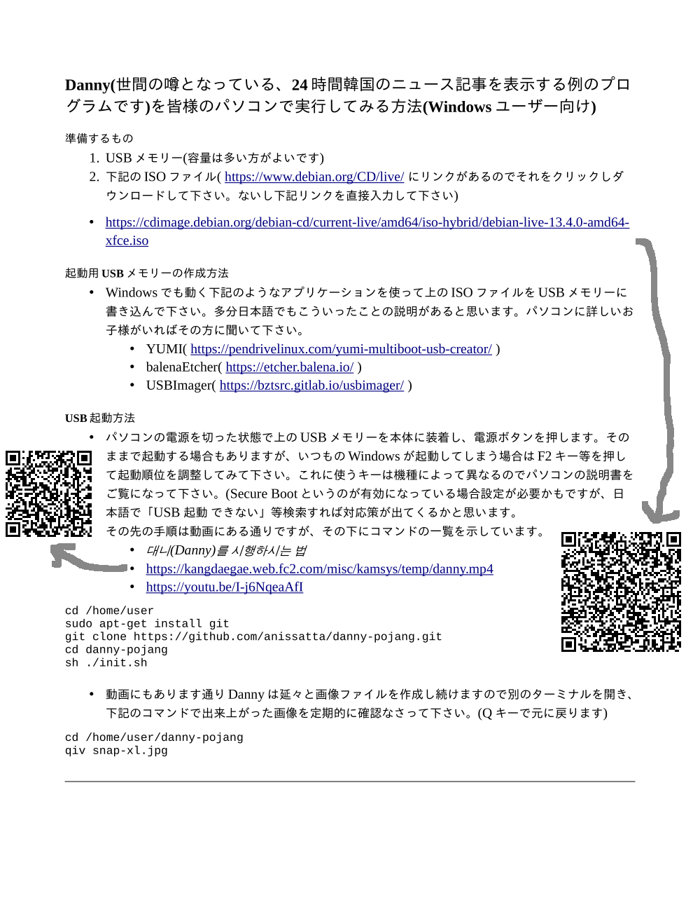